Девять миров, карта, мастерская, магазин и результат. Нажмите на кадр для полного размера. Диагностический свет справа — отдельная проверка реакции объёма и теней. Остальные кадры показывают обычные игровые источники.
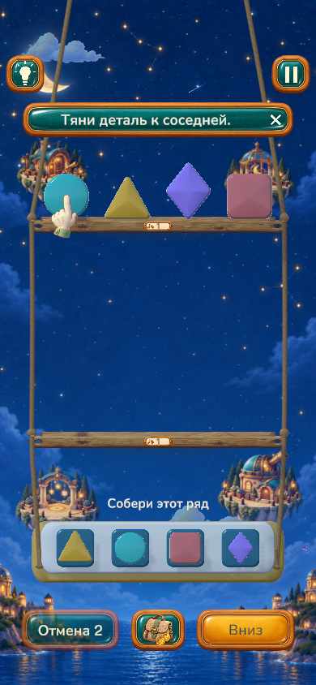
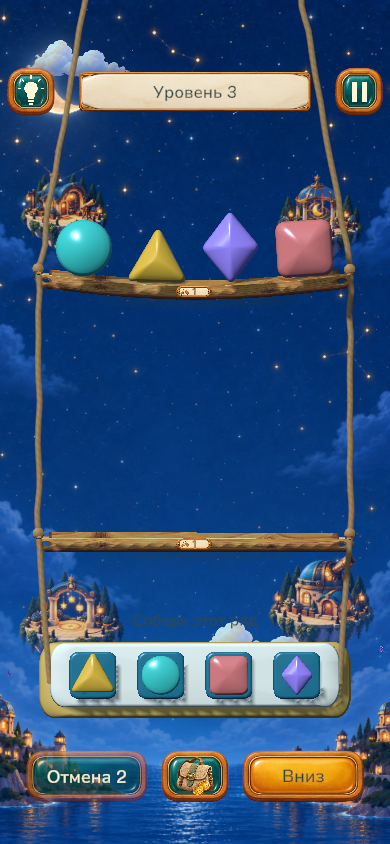
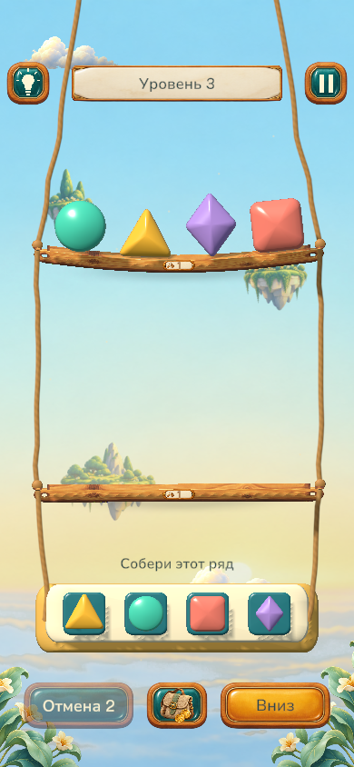
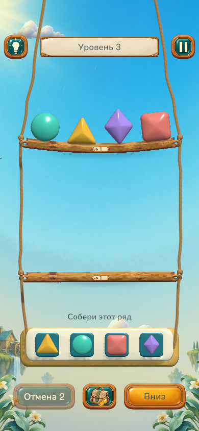
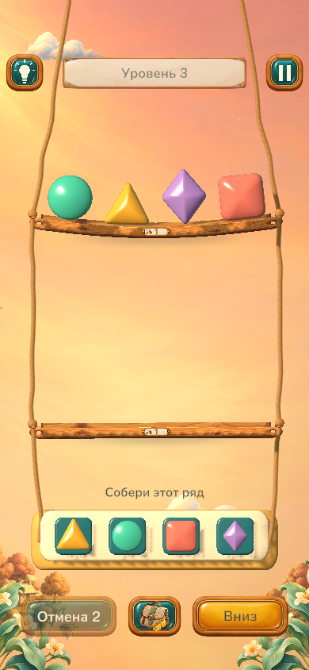
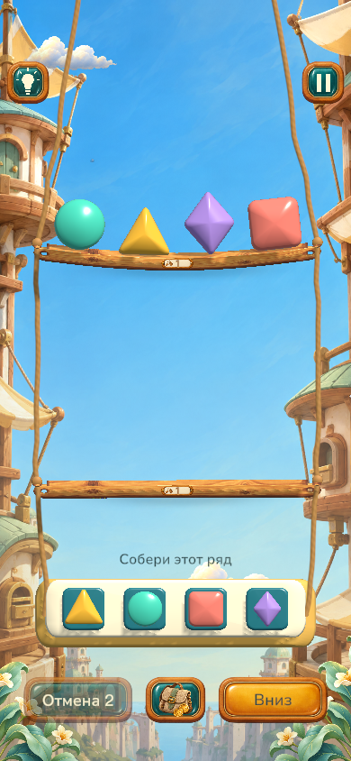
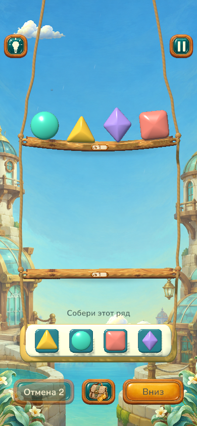
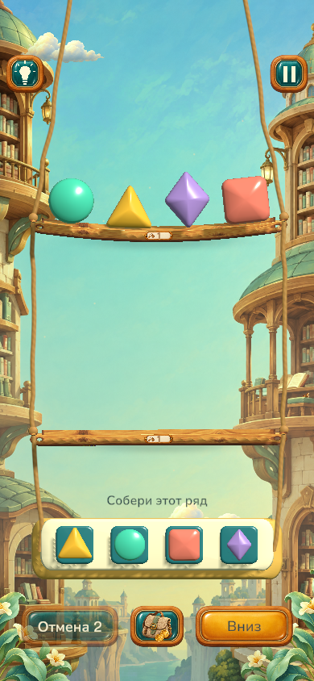
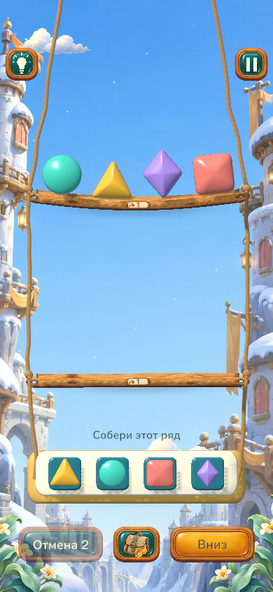
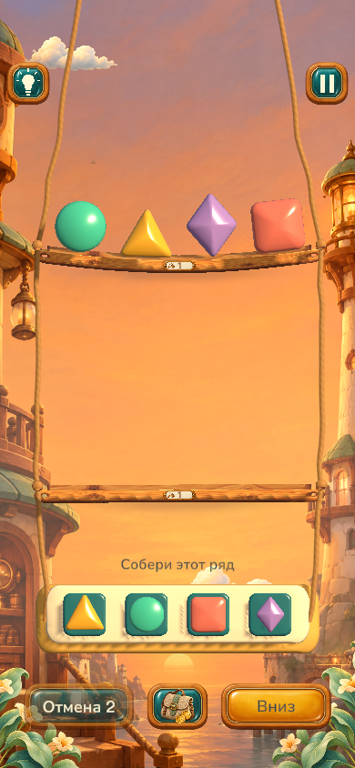
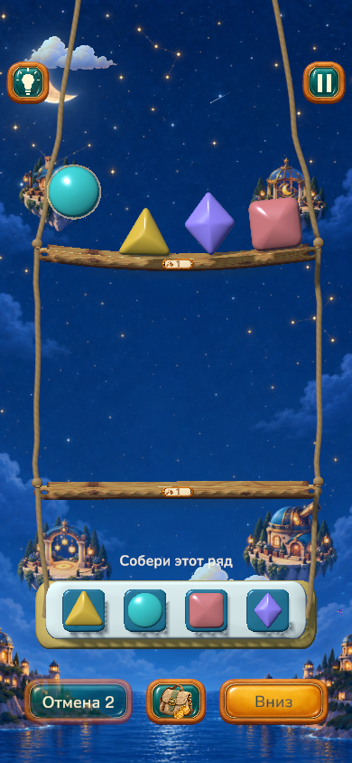
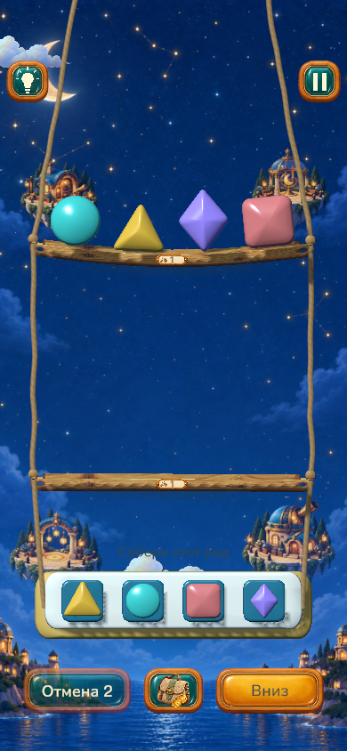
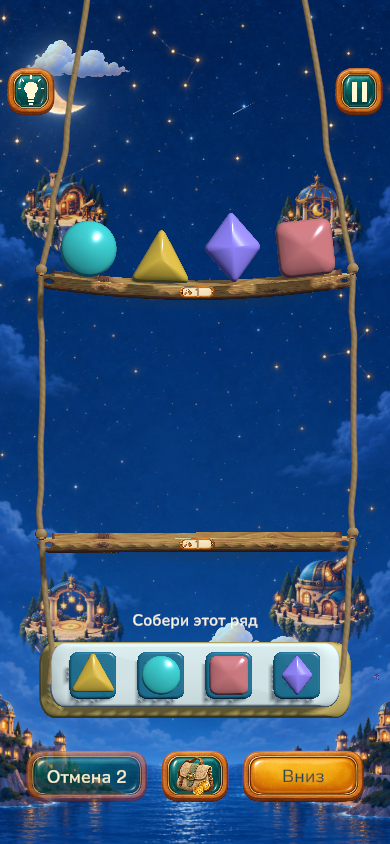
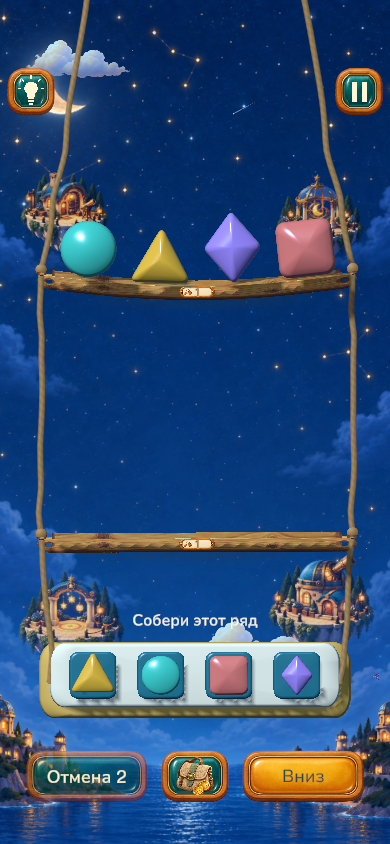
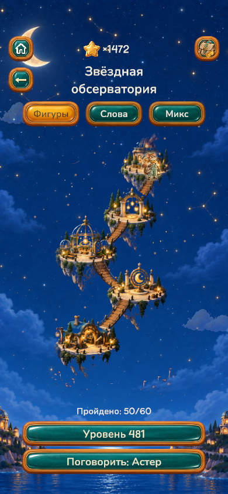
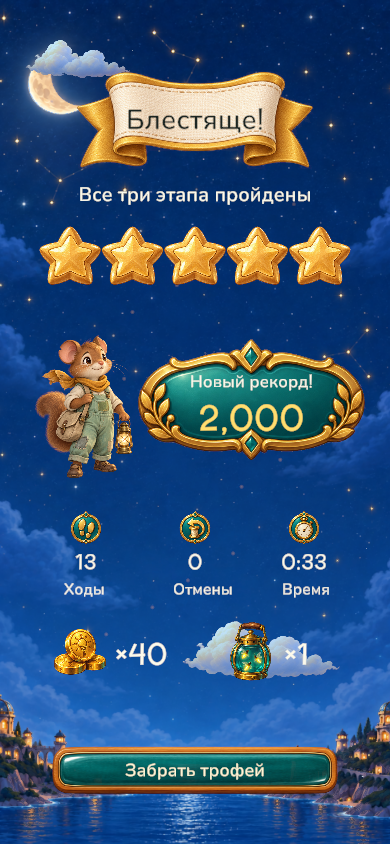
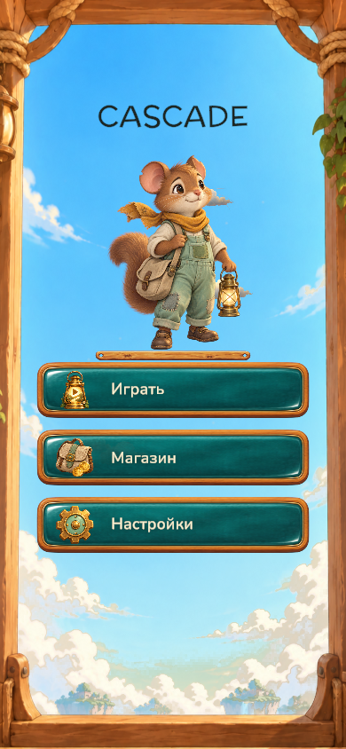
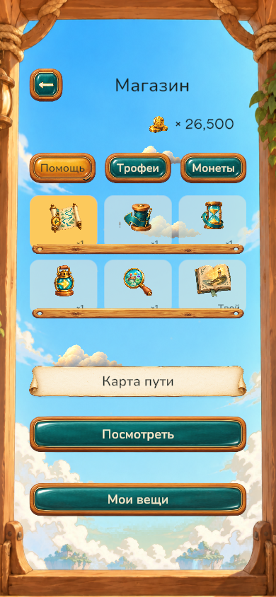
Мобильный профиль проверен в редакторе. Физический iPhone не проверялся. Рисованные фоны используют объёмное освещение в 2.5D; фигуры — реальные меши и материалы URP.